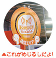
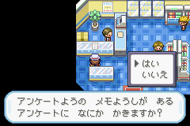
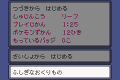
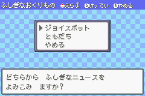
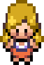
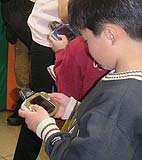
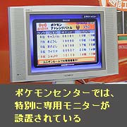
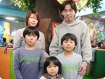

| |
| ポケモンセンターオーサカへ飛んだN.O.M、今回は３月２５日に全国的にスタートした『ジョイスポットサービス』を体験してきました。ジョイスポットサービスとは、ワイヤレスアダプタを使ってお店に設置された基地局と無線通信して、いろんなデータを貰えたり、新しい遊びができるというもの。N.O.Mも早速ゲームボーイアドバンス(またはゲームボーイアドバンス-SP)とワイヤレスアダプタ、それに『ポケットモンスター
ファイアレッド』または『ポケットモンスター リーフグリーン』を揃えて、いざ突入です！ |
|

この日は日曜日。お店の外には入店を待つ"おともだち"の列がズラリ。みなさんのポケモン大好きっぷりがよーくわかります。なかに入ってみると、ジョイスポットのコーナー発見！ ポケモンセンターに設置されたジョイスポットの目印の下には、モニターが設置してあります。どんなやり方をすればいいかわからなくても安心、ポケモンセンターでは係のお姉さんがちゃんと説明してくれますよ。今回N.O.Mが体験したのは、『ふしぎなニュース』『ポケモンチャレンジバトル』のふたつ。
まずはニュースを受け取るための準備。ゲーム内の『フレンドリィショップ』のカウンターにあるアンケートに、『ともだち いっぱい ふしぎ つうしん』と書き込むと、お店の人が『ふしぎなおくりもの』を教えてくれます。ここでレポートを書いて電源をオフ。
ワイヤレスアダプタ(ファイアレッド、リーフグリーンのどちらにも同梱されています)をゲームボーイアドバンスに接続、電源をオン。いちばん下に『ふしぎなおくりもの』のウィンドウが表示されるので、選んでAボタンを押します。つぎに『ふしぎなニュース』を選ぶと「どちらからふしぎなニュースを選びますか？」と聞かれるので、「ジョイスポット」を選択すれば通信開始！
これで『ふしぎなニュース』が読めるようになりました。これは不定期に更新されるポケモンについてのニュースで、ジョイスポットサービス実施店だけで特別に貰えるものなのです！ポケモンについての情報や、これまで明かされなかった秘密がわかっちゃう、新しいサービスです！ もちろん無料なので、仲間と一緒にどんどん足を運んで新しい情報をゲットしてね。
ポケモン チャレンジバトルは、ゲーム内のポケモンセンターの２階にあるユニオンルームの奥で、特別なトレーナーと対戦できるサービス。そのためには以下の条件が必要です。
１ オーキド博士からポケモンずかんをもらっておく
２ 手持ちのポケモンのうち、最低２匹がレベル30以下であること
準備が完了したら、ワイヤレスアダプタを接続してユニオンルームへレッツゴー。部屋の奥には沢山のトレーナーがウロウロしているので、このなかから『おとなのおねえさんのエツコ』を探さなければなりません。ちょっと迷うかな？
エツコを見つけたら、『あいさつ』→『たいせん』を選んで、バトル開始！ このバトルでは、自分のポケモンのレベルに合ったランクの対戦相手が出てくるそう。編集長はレベル14のスピアー(名前は『むいちゃん』)とピジョン(名前は『ケコ』)を投入。がんばれ２匹！対するエツコが繰り出してきたのは、レベル20のアーボとオニスズメ。レベル差、相性ともに不利な予感が！
ジョイスポットと通信しながらの対戦なので、通信時間が少しかかったりもしますが、その分「技が決まったか」「ダメージはどのくらい？」といったドキドキ感が増して白熱のバトルになりました。コツコツと相手にダメージを与えていたのですが、こちらのピジョンがアーボの攻撃に倒れ、その後なんとか勝ち残ったスピアーもオニスズメにつつかれまくって惨敗…。
店内のモニターには勝ち数ランキング上位20名が表示されています。エツコと対戦し、その勝ち数でランキングが決定するので、気合いを入れてバトルすべし！ ちなみに途中で通信が切れたり、ゲームボーイアドバンスの電源を切ったりすると負けのカウントにされてしまうので注意。
リザードンの好きな左藤賢くん(10歳)は、お父さん、お母さん、弟の晶くん(９歳)、龍くん(４歳)と大阪の枚方市からやって来ました。インターネットでジョイスポットのサービスを知ったそう。ふしぎなニュースは学校のおともだちから聞いていたそうです。対戦は未体験とのことだったので、どんどん楽しんで欲しいですね！
| また、ジョイスポット通信エリアには、たくさんの人が集まっていたので、ジョイスポットトレーナーのエツコだけでなく、いろんな人とポケモンバトルを楽しむことができました。知らない人でもポケモンが大好きなのはみんな同じ！チャットで話をしたり、ポケモンの交換をしたり…新しい仲間に出会えることも、ジョイスポットサービスの魅力ですね！ |
|
|
|